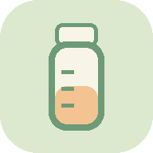

上次喝奶
还没有记录
记录第一笔后显示奶量
今天还没有喝奶记录
手动备份全部历史记录，还原前先预览并确认。
CSV 只备份喝奶记录，还原时沿用当前喝奶间隔。
服务地址仅用于读取记录，日常离线使用无需连接。

为平板横屏桌面设计。大字号时钟、喝奶记录、奶量统计与夜间模式。
开源协议：MITGitHub：kalaGN/baby-feeding-dashboard
包含今天；没有记录的日期按0计算，日均奶量按所选7天或30天计算。
到预计时间会自动添加一条记录，奶量沿用上一笔；没有上一笔时记 120 ml。